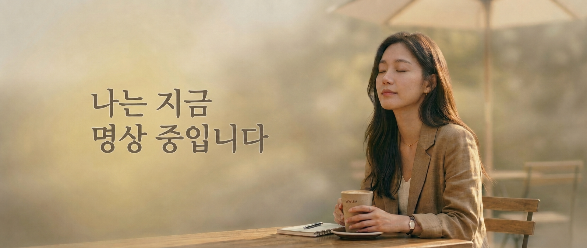
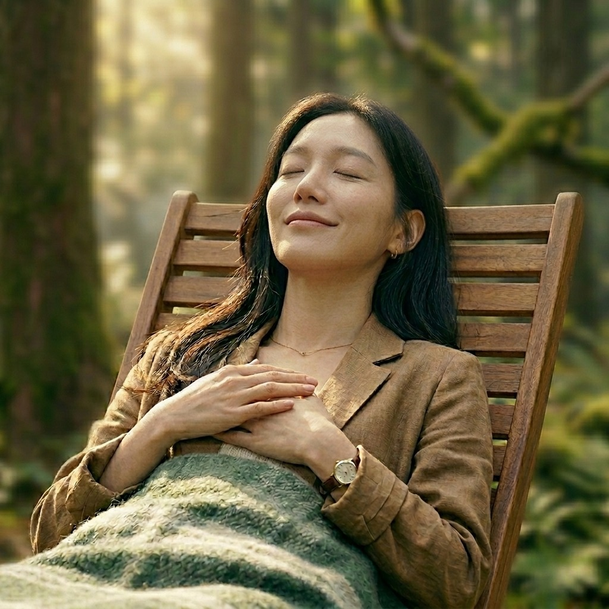

와움은 우리 모두의 의식이 매 순간 작동시키는 보편 원리에서 출발합니다. 종교나 특정 가르침에 기대지 않고, 누구나 이미 가진 의식 그 자체로 매일을 능동적으로 조율하며 살아가는 길.
외부의 대상과 마주쳤을 때 터져 나오는 감탄사. 좁은 '나'의 경계가 열리며 세계와 연결되는 소리. 자연·빛·타인·우주를 향해 의식이 뻗어나가는 순간.
다시 안으로 돌아오는 소리. 사회적 역할과 가면을 내려놓고 가장 깊은 나, 근원의 나로 귀환하는 울림. 확장된 의식이 본질로 수렴되는 순간.
“와움의 명상은
세계를 향한 사랑·호기심·즐거움에서 시작합니다.”
와움 명상의 원리는 한 줄에 담깁니다.
우리의 모든 주관적 현실이 탄생하는 기초 설계도입니다.
내면에서 일어나는 인식의 과정을 구조적으로 이해하면, 우리는 더 이상 경험에 휩쓸리지 않습니다. 내적 구조를 파악하는 순간, 우리는 경험의 포로에서 벗어나 경험을 관찰하고 선택할 수 있는 진정한 자유를 얻게 됩니다.
일상의 소음에서 벗어나 자신의 몸과 마음을 정교하게 조율하는 리추얼입니다.
여정의 끝에서 마주하는 나는 이전과 같은 곳에 서 있지만, 존재의 해상도가 한 겹 더 맑고 넓게 업데이트된 상태입니다. 이것이 와움이 지향하는 존재의 진화입니다.
마음의 관성에서 벗어나 삶의 주도권을 회복하는 구체적인 프로세스입니다.
| 자기 지도의 확보 | 생각의 미로에서 길을 잃었을 때, 스스로의 위치를 파악하고 제자리로 돌아올 수 있는 내면의 나침반이 되어줍니다. |
| 주체성 회복 | 외부 환경이나 감정에 휘둘리는 수동적 관찰자를 넘어, 자신의 현실을 직접 빚어내는 경험의 창조자로 거듭나게 합니다. |
| 삶의 리추얼 | 종교적 믿음이나 스승의 권위에 의존하지 않고, 보편적인 원리를 통해 스스로 몸과 마음을 조율하는 현대인의 생존 기술입니다. |

의식이 외부의 대상을 의도적으로 정하고, 그 대상이 의식 안으로 자연스럽게 들어오도록 허용합니다. 이완된 의식 안에서, 자극이 나타나는 그대로를 받아들이는 자리입니다.
의식이 만난 대상이 추상적 자극으로만 머물지 않게 합니다. 대상의 특성을 신체 감각으로 결합해 지금 여기에 정박시키며, 자율신경의 자연스러운 조절이 함께 일어납니다.
'인식되는 것'에서 '인식하는 자'로 자각의 방향을 180도 돌립니다. 대상을 받아들이던 그 맑은 의식 자체가 곧 나임을 발견하는 와움 명상의 핵심 전환점.
회귀한 의식이 외부의 대상이 아닌 자기 자신을 비춥니다. 사회적 역할과 가면 뒤의 본래의 나를 자애롭게 돌보는, 가장 부드러운 빛으로 자기를 다시 만나는 자리.
와움의 두 움직임을 거친 몸과 마음이 다시 일상으로 돌아갑니다. 한 겹 더 맑아진 나는 사라지지 않고, 일상의 첫 동작과 함께 자연스럽게 흐릅니다.
같은 5단 공식 위에서 대상만 갈아 끼우면, 다른 와움 명상이 됩니다. 사용자는 하루의 어느 자리에서, 어떤 결의 의식 조율이 필요한지 스스로 선택할 수 있습니다.
| 대상 | 경험의 결 | 확장의 결 (몸 · 마음) | 의식을 조율하고 싶은 순간 |
|---|---|---|---|
| 호흡 | 살아있음의 리듬 | 몸의 안정 · 마음의 정돈 | 발표 전, 결정 직전, 하루를 마무리하는 자리 |
| 빛 | 따뜻함 · 환함 | 몸의 활력 · 마음의 환해짐 | 환한 의식으로 하루를 시작하고 싶은 아침 |
| 소리 | 공간감 · 진동 | 긴장의 풀림 · 마음의 여백 | 의식의 여백을 회복하고 싶은 순간 |
| 온기 | 안정 · 포근함 | 몸의 풀림 · 마음의 안전감 | 자기 안의 따뜻함을 깨우고 싶은 밤 |
| 감정 | 자기와의 만남 | 가슴의 풀림 · 마음의 흐름 | 감정의 흐름을 회복하고 싶을 때 |
| 생각 | 거리 · 관찰 | 머리의 풀림 · 마음의 명료함 | 의식의 명료함이 필요한 새벽 |
| 사람 | 연결 · 따뜻함 | 가슴의 따뜻함 · 마음의 연결 | 그리운 얼굴과 다시 만나고 싶을 때 |
| 풍경 | 광활 · 고요 | 몸의 쉼 · 마음의 광활함 | 시야를 넓히고 싶은 순간 |
대상은 달라도 도착점은 같습니다.
출발의 나가, 새로운 나로 돌아옵니다.
대상별 프로그램이 어떻게 구성되는지를 보여주는 프로토타입. 같은 5단 골격 위에서 빛이라는 대상에 맞춰 가이드 언어가 빚어집니다.
의식을 빛이라는 대상에 둡니다. 다만 좇지 않고, 빛이 의식의 자리로 찾아오게 둡니다.
의식의 대상이 된 빛이 이제 몸으로 내려앉습니다. 시각이 아닌 몸의 감각으로 의식 안에 자리잡는 자리.
의식을 빛에서, 그 빛을 자각하는 의식 자체로 돌립니다. 와움 명상의 핵심 전환점.
외부의 빛은 대상이었습니다. 그러나 의식 자체가 빛입니다. 그 의식의 빛을 자기 자신에게로 돌립니다.
의식과 빛의 만남이 만든 경험은 새로운 의식이 되어 당신 안에 남고, 일상의 첫 동작으로 함께 옮겨갑니다.
와움의 확산은 '바이럴'이 아니라 '뿌리내림'의 비유로 설계됩니다. 개인이 매일 자기 의식을 조율하는 도구로 시작해, 조직과 학교, 공공·지역사회로 옮겨가는 3년의 단계별 로드맵.
와움 공식과 단편 명상이 누구나 자기 일상에서 시도해볼 수 있도록, 무료 콘텐츠와 첫 파일럿을 통해 효능을 데이터로 증명한다.
파일럿 데이터를 근거로, 기업·대학의 정규 라인업에 와움이 자기 의식 조율 도구로 자리잡는다.
민간 브랜드를 넘어, 보건소·복지관·학교 정규 교과까지 ‘공공의 의식 조율 도구’로 자리 잡는다.
인사·HRD·EAP 부서. 임직원이 능동적으로 자기 의식을 조율하는 일상 도구로 4주 프로그램을 정규 복지로 도입.
시·도 교육청, 청년재단, 정신건강복지센터. 무료/저가 라이선스로 진입해 학교·지역의 자기 인식 인프라가 된다.
정신건강의학과·심리상담센터의 보완 도구. 처방이 아닌 자기 조율 도구로, 진료실 옆에 함께 놓이도록.
한국 전통 명상 전문가와 인지·심리학 연구자. 이론은 구조의 뼈대로 들어가되, 표면에는 권위로 드러나지 않는다.
출판사·OTT·웰니스 브랜드. 호텔 객실의 ‘의식 조율 카드’, 카페의 ‘90초 와움 코너’ 등 일상 접점에 깃든다.
주체적인 자기 삶을 추구하는 사람들의 자발적 모임. 마케팅이 아닌 ‘옆자리에서 같이 의식을 조율하기’의 형태.
특정 가르침이나 인물에 의지하지 않고, 의식 + 대상 = 경험이라는 모두에게 내재된 보편 원리에서 출발합니다. 따라할 자격이 없는 사람이 없습니다.
영어 번역체가 아닌, 한국인의 정서·언어·리듬으로 새로 쓴 가이드. 와움이라는 이름 자체가 곧 그 언어의 시작입니다.
호흡뿐 아니라 빛·소리·온기·감정·생각·사람·풍경 — 일상에서 만나는 무엇이든 의식의 대상이 될 수 있습니다. 진입의 자리가 24시간 열려있습니다.
와움의 모든 단계는 인간 의식이 작동하는 보편 원리에 뿌리를 두고 있습니다. 권위로 증명하는 것이 아니라, 자기 의식으로 직접 확인할 수 있는 신뢰입니다.
와움은 ‘기분이 좋아졌다’ 수준에 머물지 않습니다. 기업·학교 도입 시 사전·사후 척도(자기효능감, 정서 조절, 수면, 지각된 스트레스)를 측정하고, 개인 사용자에게는 자율신경 변동성(HRV)·수면 데이터를 옵트인으로 연결합니다.
“회복은 숫자가 아닙니다.
다만 얼마나 많은 사람이 자기 의식의 주인이 되었는지는 셀 수 있습니다.”